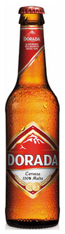

Dorada
- Origen
- Santa Cruz de Tenerife
- Descripción
- ¡La preferida en la provincia de Santa Cruz de Tenerife! Cerveza tipo pilsen, elaborada con métodos tradicionales y los mejores ingredientes naturales, 100% malta. Aroma y sabor suave, así como un agradable color dorado.
- Formato de venta
- Botellín de cerveza, 25cl
- Precio
- 0,66€